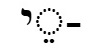

Lesson 5
Nouns: Singular, plural, "of", "the" () , "a"/"an","and" ( or )
this is the synopsis Have discussed proper nouns (names of God, people, places), now looking at common nouns - words for things or people
Will introduce בֵּןwords/w013_ben, "son", the most frequently occurring noun in the Tanakh. Also בַּתwords/w082_bat, "daughter" for gender equality even though this noun occurs much less frequently. Mostly use these words as examples, but sometimes will use the other frequently occurring nouns which are covered each in a separate lesson
BH nouns don't have a particular form have a minimum of 2 consonants (am, av) but can have 3 (yad, yom, melech) , 2 or 3 mostly?
the most frequently occurring nouns that we will learn
son
daughter
God, gods
king, ruler
land, earth, ground
day
man, husband
woman, wife
face
house, household
people
hand
word, matter, thing
father, ancestor
Singular
Plurals (or ) and
In English, plurals often formed by adding "s" eg cat, cats But lots of exceptions, especially in common words eg man/men, child/children, foot/feet Sometimes singular and plural are the same eg sheep/sheep, In Hebrew, only 3 ways, by adding these 3 endings. in next section (it's a bit special) In this section we'll learn the "ordinary" endings, and
occurs much more frequently than Most nouns use only one ending, a few can have either. Vowels in word may change. Banot very unusual in having "t" change to "n", usually just added eg eretz aratzot, av avot im and ot always stressed
all nouns in BH have a gender, either masculine or feminine. With nouns referring to people, the gender is obvious - ish, man is masculaine and isha, woman, is feminine, but others are not obvious egeretz, land, is feminine and yom, day, is masculine. You don't need to learn these genders, but you need to be aware of them because they sometimes determine the form of verbs (and adjectives). Masculine nouns usually form their plurals with and feminine nouns with but some very frequently occurring nouns are exceptions: av/avot, isha/anashim, ir/arim, shana/shanim
Some words that are singular in English are plural in Tanakh Hebrew elohim, panim
extra nouns ending in ah are feminine (will have to make an image for this) drop the ah before adding ot, only frequent examples mishpachah/mishpachot
"of" ()
"the"
"the"
the son
the king, the ruler
the land, the earth, the ground
the day
the man, the husband
the house, the household
the people
the hand
the word, the matter, the thing
"and"
"and"
and (a) son
The consonant וְ alefbet_consonants_and_vowels/v
is often added to the beginning of a word.
When it's added to a noun it means "and". It also often occurs as the first letter of a verb.
Sometimes וְ alefbet_consonants_and_vowels/v
added at the beginning of a word
becomes the vowel וּ alefbet_consonants_and_vowels/u
When this happens, the וּ alefbet_consonants_and_vowels/u
is always a separate syllable (ie, the next consonant in the word is the start of a new syllable.)
וְ alefbet_consonants_and_vowels/v becomes וּ alefbet_consonants_and_vowels/u when it's added at the beginning of words starting with:
בּ
(Note that the בּ alefbet_consonants_and_vowels/b becomes ב alefbet_consonants_and_vowels/v)
מ
פּ
(Note that the פּalefbet_consonants_and_vowels/p becomes פalefbet_consonants_and_vowels/f)

"his"
(singular noun)
 (plural noun)
(plural noun)
son
his son
his daughter
Exercise
some explanatory text
this is the exercise